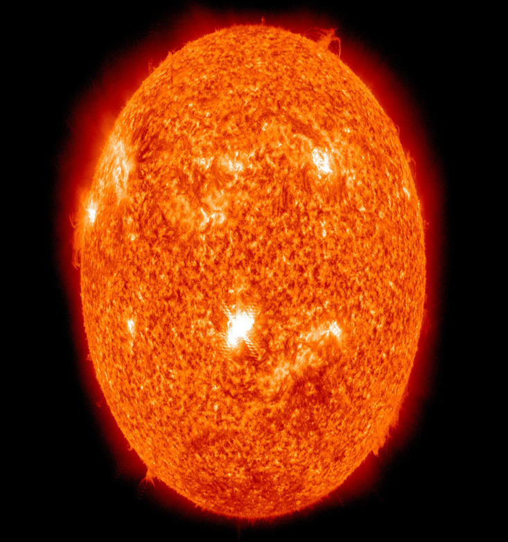
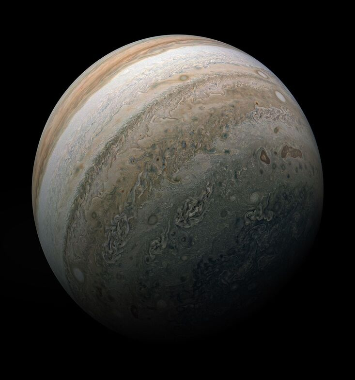

Star
The Sun
The star at the centre of our solar system. It holds 99.8 percent of all the mass in it.

NASA Data Space Discovery Astronomy
Cosmic Explorer is your guide to the night sky. Discover planets, moons, stars, galaxies and other astronomical objects, each with a detailed profile of the facts that define it.
01Explore the cosmos
Cosmic Explorer is a single-page web application for exploring astronomy and space discovery data.
Browse celestial objects from our solar system and beyond — planets, moons, stars and galaxies — then open any one of them for a full profile: a clear summary, key facts at a glance, and deeper sections on what makes it remarkable.
02Featured discoveries
Six objects to start with — a star, a moon, three planets and a galaxy. Each opens into its own detailed page.
View all objects
Star
The star at the centre of our solar system. It holds 99.8 percent of all the mass in it.

Moon
Earth's only natural satellite. Its pull drives our ocean tides, and its far side always faces away from us.

Planet
A cold, dusty desert world with the tallest volcano in the solar system and two tiny moons.

Planet
The largest planet, a banded gas giant with a storm wider than Earth that has raged for centuries.

Planet
Famous for its wide, bright rings, made mostly of water ice. It is light enough to float in water.

Galaxy
The nearest large galaxy to ours, home to roughly a trillion stars — and on a slow collision course with the Milky Way.
03A universe to discover
Cosmic Explorer is designed around a simple loop: browse the collection, narrow it down, and go deep on the objects that catch your eye.
Discover
Move through planets, moons, stars and galaxies in one consistent catalogue.
Search
Jump straight to the object you are looking for by name.
Filter
Filter by type of object and sort by distance from Earth, name or size.
Learn
Open any object for its key facts, structure and the science behind it.
04Powered by NASA data
Cosmic Explorer connects astronomy discovery with publicly available NASA data, drawn from NASA's Open API platform.
api.nasa.govEndpoints are being evaluated. Live data integration is planned for Milestone 3.
01
Astronomy Picture of the Day — a daily image of the universe with a short explanation.
02
Data on asteroids that pass close to Earth, including their approaches.
03
Imagery returned from the surface of Mars by NASA's rovers.
04
Satellite imagery of our home planet, seen from orbit.
Ready when you are
Browse the prototype catalogue and open any object for its full profile. The React build arrives in Milestone 2, with live NASA data in Milestone 3.